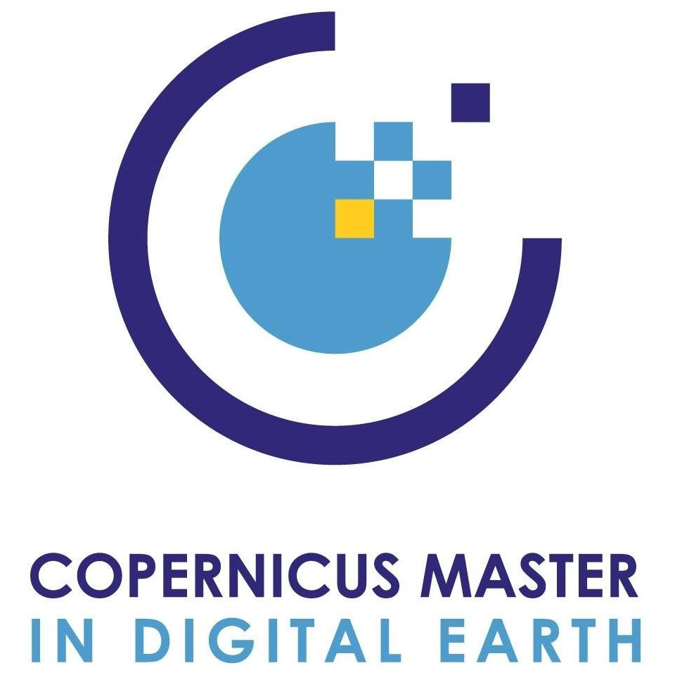

E-Portfolio - Felipe Camacho Hurtado

E-Portfolio - Felipe Camacho Hurtado
University of Salzburg (Salzburg, Austria) & Palacký University Olomouc (Olomouc, Czechia)
With the support of Erasmus+ funding programme. First year focused on Earth Observation and Geoinformatics. Second year focused on Geo-Communication and Geo-Visualization.
Audubon Companies (Bogotá D.C, Colombia)
Responsible for the creation of GIS workflows, cartographic products, and data analysis processes with Esri Products, regarding utility services management and environmental risk assessment, for United States clients.
Universidad de Los Andes (Bogotá D.C, Colombia)
With the support of the "Quiero Estudiar Escala" scholarship. Focused on Remote Sensing, Programming, and Geology.
Esri Colombia (Bogotá D.C)
Responsible for the Technical Support of GIS applications (Desktop, Online, Apps) provided by Esri for English-speaking customers around the world. Assistance in the creation of products and solutions focused on environmental management, district cadastre, and generation of cartographic products for geospatial decision making.

Multitemporal analysis in the mining areas of Lenguazaque and Guachetá municipalities, evidencing the environmental impacts and changes in land cover with GIS, Geomatics, and interferometry tools with Drone.
September 1, 2019
DOWNLOAD